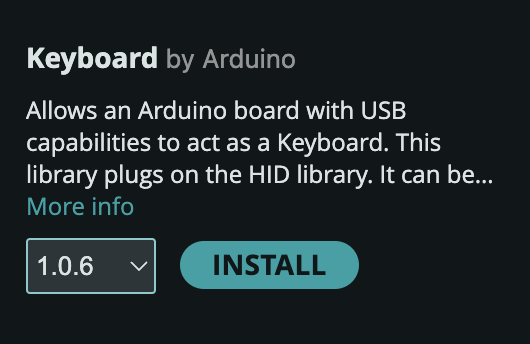
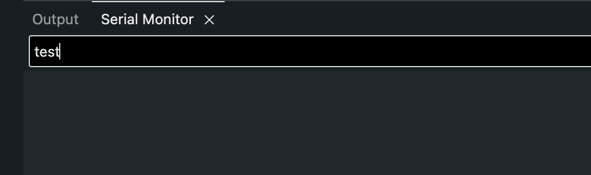
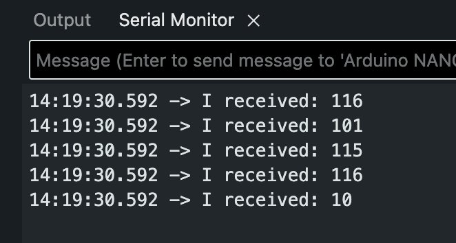
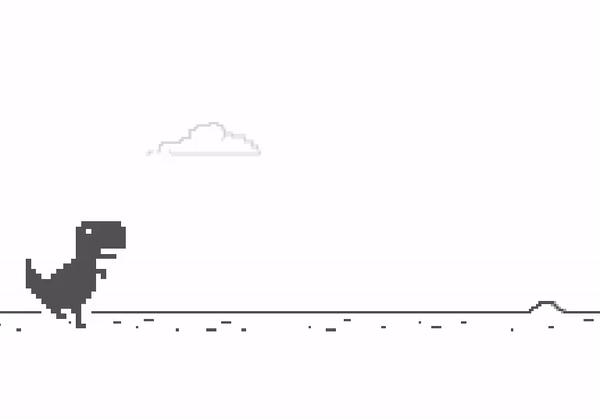

Keyboard and Mouse
Intro
The Nano 33 IoT can act like a USB keyboard or mouse, and your computer can’t tell the difference. That means anything you build can control anything on your computer: a game, a p5.js sketch, a slideshow or a music program, with no extra software.
The official Arduino documentation is a more complete reference:

Let’s start with the keyboard, using one of the built-in examples.
Go to:
File > Examples > 09.USB > Keyboard > KeyboardSerial
#include "Keyboard.h"
void setup() {
// open the serial port:
Serial.begin(9600);
// initialize control over the keyboard:
Keyboard.begin();
}
void loop() {
// check for incoming serial data:
if (Serial.available() > 0) {
// read incoming serial data:
char inChar = Serial.read();
// Type the next ASCII value from what you received:
Keyboard.write(inChar + 1);
}
}KeyboardSerial Code Breakdown
The Keyboard Library
Notice the line:
#include "Keyboard.h"This means we are using the Keyboard library. If
not installed, locate it using the library manager.

Initializing Keyboard Control
The function Keyboard.begin() is inside setup()
to start the process.
void setup() {
// initialize control over the keyboard:
Keyboard.begin();
}Read Incoming Serial Data
Serial.available() is a function used to know
when a message has been received and stored.
When you write a message in this text box and press enter, arduino receives it and stores it into its memory until Serial.read() is used.

Serial.available() simply returns the number of bytes of that stored data.
Using the example from the arduino documentation of
Serial.available(),
void loop() {
// reply only when you receive data:
if (Serial.available() > 0) {
// read the incoming byte:
int incomingByte = Serial.read();
// say what you got:
Serial.print("I received: ");
Serial.println(incomingByte, DEC);
}
}Sending a message of “test” and pressing enter results in the incoming Byte data returning:

This makes sense because the data is being printed using
Serial.println() using a base10 format, which means
it is returning the ascii code associated with each letter.
Using a text to ASCII code converter shows the same result where:
- t:
116 - e:
101 - s:
115 - t:
116 - (new line):
10
NoteIn Arduino programming, DEC is a pre-defined constant used to specify that a value should be treated or displayed in the decimal (base 10) format.
It is used in the second parameter of
Serial.println()Serial.println(val, format)It is DEC by default.
Now that we know about ASCII codes and how a minimal program
that reads incoming serial data works, we can understand the
last part of the KeyboardSerial.ino example.
Keyboard write()
The Keyboard.write() function sends a keystroke
to your computer as if a user has physically pressed a keyboard
key.
It expects either a letter (char data type):
Keyboard.write('A');Or an ascii code (int data type):
Keyboard.write(65);Note65 is the ASCII code for
A.Check out a table with each character with its corresponding ASCII code.
WarningA value that has single quotes
''is known as a char data type.Check out the Arduino Documentation: Char
// read incoming serial data:
char inChar = Serial.read();
// Type the next ASCII value from what you received:
Keyboard.write(inChar + 1);Note
It may be confusing, but 1 is being added to a char data type. Since a char has an ASCII representation, you can perform arithmetic.
From the Char Arduino Documentation:
This means that it is possible to do arithmetic on characters, in which the ASCII value of the character is used (e.g. A + 1 has the value 66, since the ASCII value of the capital letter A is 65).
In theory, sending a serial message to Arduino in the form of
a letter, will result in Arduino simulating the key press of the
letter that is one value higher of the one received (in the
ASCII table). For example: Typing A and pressing
enter will result in Arduino simlulating the keypress of
B.
Try it! Type in the Serial Monitor and see it be replaced with a B when you press enter.
Using Special Keys and Keyboard Modifiers (Shift, Ctrl, etc)
Check out the Arduino documentation for this: Keyboard Modifiers and Special Keys
What if you wanted to control a game that uses special keys or modifiers?
Here I will use the classic Google Dino Run as an example to be played with an Arduino: (Link to Dinosaur T-Rex Game)

According to the description, the up arrow key is used to jump, and the down arrow key is used to crouch.
In the Arduino Documentation, it tells us that we can use the
const KEY_UP_ARROW and KEY_DOWN_ARROW
for these keys.
I modified the code to include one more button. Wire it to pin 3 the same way, with its own 10kΩ resistor:
#include "Keyboard.h"
void setup() {
// open the serial port:
Serial.begin(9600);
// initialize control over the keyboard:
Keyboard.begin();
}
void loop() {
int upbuttonState = digitalRead(2);
int downbuttonState = digitalRead(3);
if (upbuttonState == 1) {
Keyboard.write(KEY_UP_ARROW);
}
if (downbuttonState == 1) {
Keyboard.write(KEY_DOWN_ARROW);
}
delay(10);
}Mouse
The Mouse library works the same way as the Keyboard library. If it isn’t installed, find it in the Library Manager.
Move with Tilt
Your Nano has an accelerometer built in, so you don’t need any more parts. This sketch uses the same Arduino_LSM6DS3 library as the accelerometer tutorial from Week 9. If it isn’t installed, find it in the Library Manager.
WarningA sketch that keeps moving the mouse can take over your cursor, and then you can’t click Upload. That’s why this one only moves the cursor while you hold the button.
#include "Mouse.h"
#include <Arduino_LSM6DS3.h>
int buttonPin = 2; // the cursor only moves while you hold this button
void setup() {
pinMode(buttonPin, INPUT);
IMU.begin();
Mouse.begin();
}
void loop() {
float x, y, z;
if (digitalRead(buttonPin) == HIGH && IMU.accelerationAvailable()) {
IMU.readAcceleration(x, y, z);
// a tilt reads between -1 and 1, so these are between -10 and 10
int moveX = -y * 10;
int moveY = -x * 10;
Mouse.move(moveX, moveY);
}
delay(10);
}Hold the board flat with the USB port pointing away from you, press the button and tilt.
Mouse.move(moveX, moveY)moves the cursor that far from where it is now.intcan’t hold decimals, so a very small tilt becomes0. That’s why the cursor stays still when the board is nearly level.
If the cursor goes the wrong way, remove the minus sign from
that line. To change the speed, change the 10.
Try It
- Knock to click: Add
Mouse.click();inside theifof your Knock sketch, along with the#includeandMouse.begin(). - Your midterm as a controller: Your midterm interface is already wired for pin 2 or A0. What could it control on your computer?
- Change the slide: Use
Keyboard.write(KEY_RIGHT_ARROW)to move through a slideshow. - Your own p5.js sketch: p5.js can already respond to keys and the mouse, so your Arduino can control your sketch with no extra code.
When Something Goes Wrong
- The keyboard or mouse gets out of control. Unplug the USB cable.
- You can’t upload, because the sketch keeps typing or moving. Double-tap the reset button on the Nano. This stops your sketch so you can upload a fixed one. If the port disappears, choose it again under Tools > Port.
Keyboard.horMouse.h: No such file or directory. Install that library from the Library Manager.- Nothing happens when you press the button. Check the wiring with the Button sketch first.
- One press clicks twice. Change
delay(10)todelay(20). - Your Mac opens a Keyboard Setup Assistant window. It thinks you plugged in a new keyboard. You can close it.